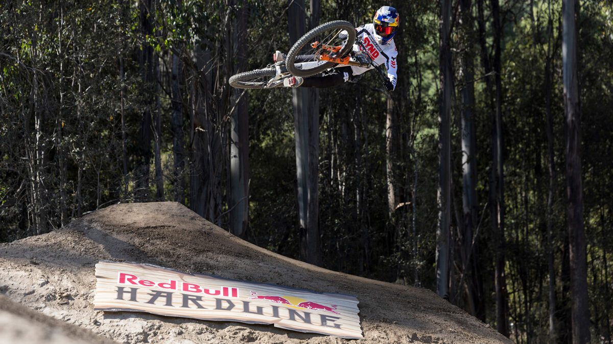
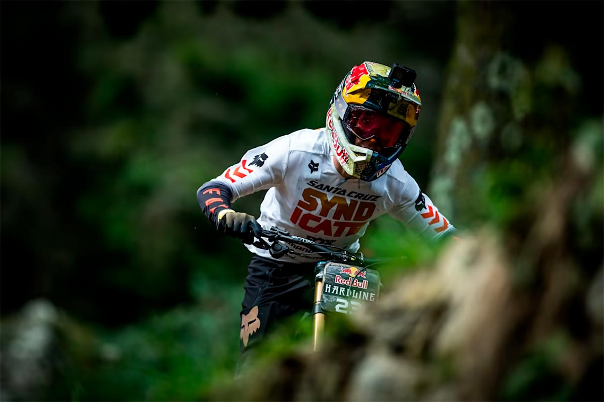
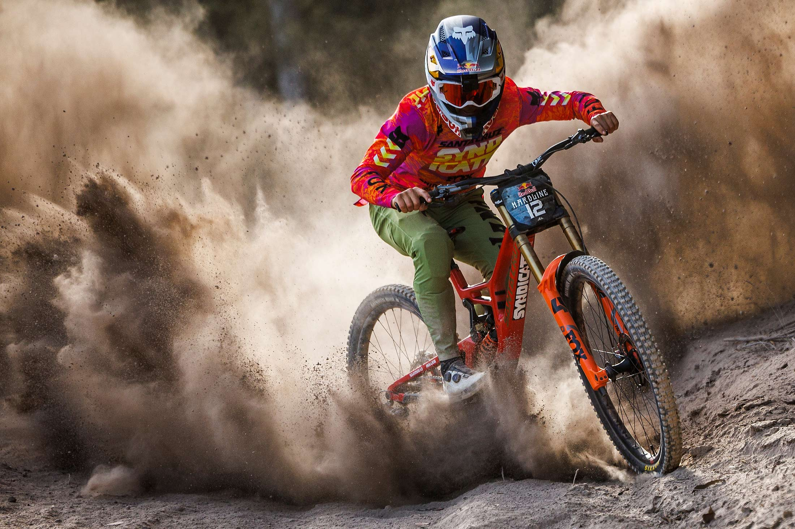
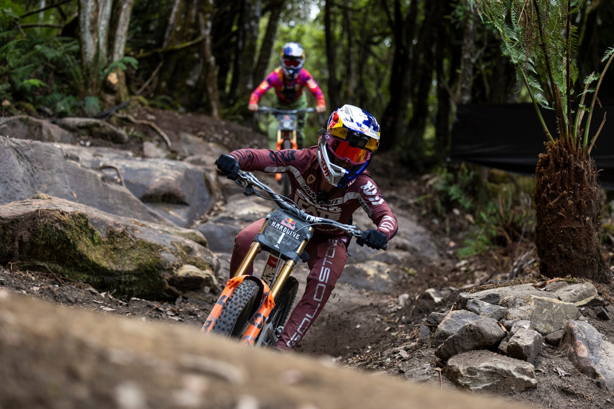

ATLETAS
PERFILES DE LOS RIDERS MÁS DOMINANTES DEL DOWNHILL MEXICANO. PODER, TÉCNICA Y PRECISIÓN EN CADA DESCENSO.

01
Toti Hope
Team Orbea
# Ranking
01
Victorias
14
Podios
28
Especialista en piedra suelta

02
Camila Aguilar
Electrolit Racing
# Ranking
02
Victorias
12
Podios
24
Especialista en bosque técnico

03
Kaito Roldan
Maxxis
# Ranking
03
Victorias
10
Podios
21
Especialista en alta velocidad

04
Juan Perez
FOX MX
# Ranking
04
Victorias
08
Podios
18
Especialista en tramos rotos

05
Valeria Soto
SRAM
# Ranking
05
Victorias
11
Podios
22
Especialista en curvas cerradas

06
Olin Garcia
Shimano Team
# Ranking
06
Victorias
09
Podios
19
Especialista en descenso extremo